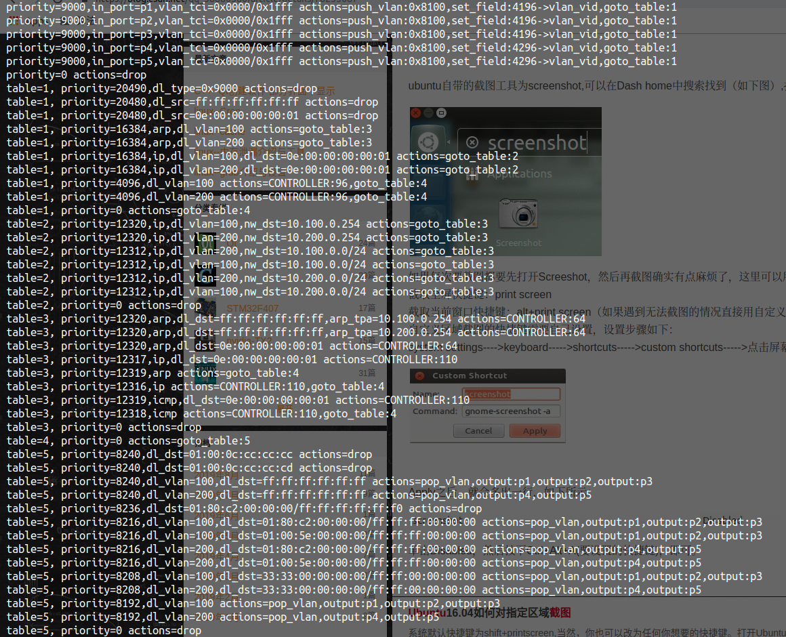

dps:
switch-1:
dp_id: 0x1
timeout: 3600
arp_neighbor_timeout: 3600
interfaces:
1:
native_vlan: 100
2:
native_vlan: 100
3:
native_vlan: 100
4:
native_vlan: 200
5:
native_vlan: 200
vlans:
100:
faucet_vips: ["10.100.0.254/24"]
200:
faucet_vips: ["10.200.0.254/24"]
routers:
router-1:
vlans: [100, 200]
docker restart faucet
lxyustc@lxyustc-TM1701:~/WorkSpace/dockeretc/faucet$ cat faucet.log
Aug 30 09:14:10 faucet.valve INFO DPID 1 (0x1) switch-1 table ID 0 table config match_types: (('eth_dst', True), ('eth_type', False), ('in_port', False), ('vlan_vid', False)) name: vlan next_tables: ['eth_src'] output: True set_fields: ('vlan_vid',) size: 32 vlan_port_scale: 1.5
Aug 30 09:14:10 faucet.valve INFO DPID 1 (0x1) switch-1 table ID 1 table config match_types: (('eth_dst', True), ('eth_src', False), ('eth_type', False), ('in_port', False), ('vlan_vid', False)) miss_goto: eth_dst name: eth_src next_tables: ['ipv4_fib', 'vip', 'eth_dst', 'flood'] output: True set_fields: ('vlan_vid', 'eth_dst') size: 32 table_id: 1 vlan_port_scale: 4.1
Aug 30 09:14:10 faucet.valve INFO DPID 1 (0x1) switch-1 table ID 2 table config dec_ttl: True match_types: (('eth_type', False), ('ipv4_dst', True), ('vlan_vid', False)) name: ipv4_fib next_tables: ['vip', 'eth_dst', 'flood'] output: True set_fields: ('eth_dst', 'eth_src', 'vlan_vid') size: 32 table_id: 2 vlan_port_scale: 3.1
Aug 30 09:14:10 faucet.valve INFO DPID 1 (0x1) switch-1 table ID 3 table config match_types: (('arp_tpa', False), ('eth_dst', False), ('eth_type', False), ('icmpv6_type', False), ('ip_proto', False)) name: vip next_tables: ['eth_dst', 'flood'] output: True size: 32 table_id: 3
Aug 30 09:14:10 faucet.valve INFO DPID 1 (0x1) switch-1 table ID 4 table config exact_match: True match_types: (('eth_dst', False), ('vlan_vid', False)) miss_goto: flood name: eth_dst output: True size: 41 table_id: 4 vlan_port_scale: 4.1
Aug 30 09:14:10 faucet.valve INFO DPID 1 (0x1) switch-1 table ID 5 table config match_types: (('eth_dst', True), ('in_port', False), ('vlan_vid', False)) name: flood output: True size: 32 table_id: 5 vlan_port_scale: 2.1
table id及其对应表名称table name
| Table ID（表ID） | Table Name（表名称） | match_fields(匹配域) |
|---|---|---|
| 0 | VLAN | eth_dst,eth_type,in_port,vlan_id |
| 1 | ETH_SRC | eth_dst,eth_src,eth_type,in_port,vlan_id |
| 2 | IPV4_FIB | eth_type,piv4_dst,vlan_id |
| 3 | VIP | arp_tpa,eth_dst,eth_type,icmpv6,ip_proto |
| 4 | ETH_DST | eth_dst,vlan_id |
| 5 | FLOOD | eth_dst,in_port,vlan_id |
# ./dumps-flows br1

流表内容如下
priority=9000,in_port=p1,vlan_tci=0x0000/0x1fff actions=push_vlan:0x8100,set_field:4196->vlan_vid,goto_table:1
priority=9000,in_port=p2,vlan_tci=0x0000/0x1fff actions=push_vlan:0x8100,set_field:4196->vlan_vid,goto_table:1
priority=9000,in_port=p3,vlan_tci=0x0000/0x1fff actions=push_vlan:0x8100,set_field:4196->vlan_vid,goto_table:1
priority=9000,in_port=p4,vlan_tci=0x0000/0x1fff actions=push_vlan:0x8100,set_field:4296->vlan_vid,goto_table:1
priority=9000,in_port=p5,vlan_tci=0x0000/0x1fff actions=push_vlan:0x8100,set_field:4296->vlan_vid,goto_table:1
priority=0 actions=drop
table=1, priority=20490,dl_type=0x9000 actions=drop
table=1, priority=20480,dl_src=ff:ff:ff:ff:ff:ff actions=drop
table=1, priority=20480,dl_src=0e:00:00:00:00:01 actions=drop
table=1, priority=16384,arp,dl_vlan=100 actions=goto_table:3
table=1, priority=16384,arp,dl_vlan=200 actions=goto_table:3
table=1, priority=16384,ip,dl_vlan=100,dl_dst=0e:00:00:00:00:01 actions=goto_table:2
table=1, priority=16384,ip,dl_vlan=200,dl_dst=0e:00:00:00:00:01 actions=goto_table:2
table=1, priority=4096,dl_vlan=100 actions=CONTROLLER:96,goto_table:4
table=1, priority=4096,dl_vlan=200 actions=CONTROLLER:96,goto_table:4
table=1, priority=0 actions=goto_table:4
table=2, priority=12320,ip,dl_vlan=100,nw_dst=10.100.0.254 actions=goto_table:3
table=2, priority=12320,ip,dl_vlan=200,nw_dst=10.200.0.254 actions=goto_table:3
table=2, priority=12312,ip,dl_vlan=200,nw_dst=10.100.0.0/24 actions=goto_table:3
table=2, priority=12312,ip,dl_vlan=100,nw_dst=10.100.0.0/24 actions=goto_table:3
table=2, priority=12312,ip,dl_vlan=200,nw_dst=10.200.0.0/24 actions=goto_table:3
table=2, priority=12312,ip,dl_vlan=100,nw_dst=10.200.0.0/24 actions=goto_table:3
table=2, priority=0 actions=drop
table=3, priority=12320,arp,dl_dst=ff:ff:ff:ff:ff:ff,arp_tpa=10.100.0.254 actions=CONTROLLER:64
table=3, priority=12320,arp,dl_dst=ff:ff:ff:ff:ff:ff,arp_tpa=10.200.0.254 actions=CONTROLLER:64
table=3, priority=12320,arp,dl_dst=0e:00:00:00:00:01 actions=CONTROLLER:64
table=3, priority=12317,ip,dl_dst=0e:00:00:00:00:01 actions=CONTROLLER:110
table=3, priority=12319,arp actions=goto_table:4
table=3, priority=12316,ip actions=CONTROLLER:110,goto_table:4
table=3, priority=12319,icmp,dl_dst=0e:00:00:00:00:01 actions=CONTROLLER:110
table=3, priority=12318,icmp actions=CONTROLLER:110,goto_table:4
table=3, priority=0 actions=drop
table=4, priority=0 actions=goto_table:5
table=5, priority=8240,dl_dst=01:00:0c:cc:cc:cc actions=drop
table=5, priority=8240,dl_dst=01:00:0c:cc:cc:cd actions=drop
table=5, priority=8240,dl_vlan=100,dl_dst=ff:ff:ff:ff:ff:ff actions=pop_vlan,output:p1,output:p2,output:p3
table=5, priority=8240,dl_vlan=200,dl_dst=ff:ff:ff:ff:ff:ff actions=pop_vlan,output:p4,output:p5
table=5, priority=8236,dl_dst=01:80:c2:00:00:00/ff:ff:ff:ff:ff:f0 actions=drop
table=5, priority=8216,dl_vlan=100,dl_dst=01:80:c2:00:00:00/ff:ff:ff:00:00:00 actions=pop_vlan,output:p1,output:p2,output:p3
table=5, priority=8216,dl_vlan=100,dl_dst=01:00:5e:00:00:00/ff:ff:ff:00:00:00 actions=pop_vlan,output:p1,output:p2,output:p3
table=5, priority=8216,dl_vlan=200,dl_dst=01:80:c2:00:00:00/ff:ff:ff:00:00:00 actions=pop_vlan,output:p4,output:p5
table=5, priority=8216,dl_vlan=200,dl_dst=01:00:5e:00:00:00/ff:ff:ff:00:00:00 actions=pop_vlan,output:p4,output:p5
table=5, priority=8208,dl_vlan=100,dl_dst=33:33:00:00:00:00/ff:ff:00:00:00:00 actions=pop_vlan,output:p1,output:p2,output:p3
table=5, priority=8208,dl_vlan=200,dl_dst=33:33:00:00:00:00/ff:ff:00:00:00:00 actions=pop_vlan,output:p4,output:p5
table=5, priority=8192,dl_vlan=100 actions=pop_vlan,output:p1,output:p2,output:p3
table=5, priority=8192,dl_vlan=200 actions=pop_vlan,output:p4,output:p5
table=5, priority=0 actions=drop
可以发现增加了arp协议相关内容如：
table=1, priority=16384,arp,dl_vlan=100 actions=goto_table:3
table=1, priority=16384,arp,dl_vlan=200 actions=goto_table:3
table=3, priority=12320,arp,dl_dst=ff:ff:ff:ff:ff:ff,arp_tpa=10.100.0.254 actions=CONTROLLER:64
table=3, priority=12320,arp,dl_dst=ff:ff:ff:ff:ff:ff,arp_tpa=10.200.0.254 actions=CONTROLLER:64
table=3, priority=12320,arp,dl_dst=0e:00:00:00:00:01 actions=CONTROLLER:64
table=3, priority=12319,arp actions=goto_table:4
此外增加了ip协议相关内容
table=1, priority=16384,ip,dl_vlan=100,dl_dst=0e:00:00:00:00:01 actions=goto_table:2
table=1, priority=16384,ip,dl_vlan=200,dl_dst=0e:00:00:00:00:01 actions=goto_table:2
table=2, priority=12320,ip,dl_vlan=100,nw_dst=10.100.0.254 actions=goto_table:3
table=2, priority=12320,ip,dl_vlan=200,nw_dst=10.200.0.254 actions=goto_table:3
table=2, priority=12312,ip,dl_vlan=200,nw_dst=10.100.0.0/24 actions=goto_table:3
table=2, priority=12312,ip,dl_vlan=100,nw_dst=10.100.0.0/24 actions=goto_table:3
table=2, priority=12312,ip,dl_vlan=200,nw_dst=10.200.0.0/24 actions=goto_table:3
table=2, priority=12312,ip,dl_vlan=100,nw_dst=10.200.0.0/24 actions=goto_table:3
table=3, priority=12317,ip,dl_dst=0e:00:00:00:00:01 actions=CONTROLLER:110
table=3, priority=12316,ip actions=CONTROLLER:110,goto_table:4
还有icmp协议相关内容
table=3, priority=12319,icmp,dl_dst=0e:00:00:00:00:01 actions=CONTROLLER:110
table=3, priority=12318,icmp actions=CONTROLLER:110,goto_table:4
在实验条件下从A发送数据至B，一般而言会经历如下几步：
按照上述步骤，通过ofproto/trace应用跟踪数据包全流程。跟踪之前保存流表：
# ./save-flows br1 > saveflows2
# ovs-appctl ofproto/trace br1 in_port=p1,dl_src=00:01:02:03:04:05,dl_dst=ff:ff:ff:ff:ff:ff,dl_type=0x806,arp_spa=10.100.0.1,arp_tpa=10.100.0.254,arp_sha=00:01:02:03:04:05,arp_tha=ff:ff:ff:ff:ff:ff,arp_op=1 -generate
输出如下
Flow: arp,in_port=1,vlan_tci=0x0000,dl_src=00:01:02:03:04:05,dl_dst=ff:ff:ff:ff:ff:ff,arp_spa=10.100.0.1,arp_tpa=10.100.0.254,arp_op=1,arp_sha=00:01:02:03:04:05,arp_tha=ff:ff:ff:ff:ff:ff
bridge("br1")
-------------
0. in_port=1,vlan_tci=0x0000/0x1fff, priority 9000, cookie 0x5adc15c0
push_vlan:0x8100
set_field:4196->vlan_vid
goto_table:1
1. arp,dl_vlan=100, priority 16384, cookie 0x5adc15c0
goto_table:3
3. arp,dl_dst=ff:ff:ff:ff:ff:ff,arp_tpa=10.100.0.254, priority 12320, cookie 0x5adc15c0
CONTROLLER:64
Final flow: arp,in_port=1,dl_vlan=100,dl_vlan_pcp=0,vlan_tci1=0x0000,dl_src=00:01:02:03:04:05,dl_dst=ff:ff:ff:ff:ff:ff,arp_spa=10.100.0.1,arp_tpa=10.100.0.254,arp_op=1,arp_sha=00:01:02:03:04:05,arp_tha=ff:ff:ff:ff:ff:ff
Megaflow: recirc_id=0,eth,arp,in_port=1,vlan_tci=0x0000/0x1fff,dl_src=00:01:02:03:04:05,dl_dst=ff:ff:ff:ff:ff:ff,arp_spa=10.100.0.1,arp_tpa=10.100.0.254,arp_op=1
Datapath actions: push_vlan(vid=100,pcp=0),userspace(pid=3627324943,controller(reason=1,dont_send=0,continuation=0,recirc_id=1,rule_cookie=0x5adc15c0,controller_id=0,max_len=64))
查看faucet日志
$ cat faucet.log
Sep 02 01:10:42 faucet.valve INFO DPID 1 (0x1) switch-1 L2 learned 00:01:02:03:04:05 (L2 type 0x0806, L2 dst ff:ff:ff:ff:ff:ff, L3 src 10.100.0.1, L3 dst 10.100.0.254) Port 1 VLAN 100 (1 hosts total)
Sep 02 01:10:42 faucet.valve INFO DPID 1 (0x1) switch-1 Adding new route 10.100.0.1/32 via 10.100.0.1 (00:01:02:03:04:05) on VLAN 100
Sep 02 01:10:42 faucet.valve INFO DPID 1 (0x1) switch-1 Resolve response to 10.100.0.254 from 00:01:02:03:04:05 (L2 type 0x0806, L2 dst ff:ff:ff:ff:ff:ff, L3 src 10.100.0.1, L3 dst 10.100.0.254) Port 1 VLAN 100
从faucet日志中可以看到，本次模拟数据包跟踪后，faucet进行了3件事：
对比命令运行前后的流表
# ./diff-flows saveflows2 br1
+table=1 priority=8191,in_port=1,dl_vlan=100,dl_src=00:01:02:03:04:05 hard_timeout=7134 actions=goto_table:4
+table=2 priority=12320,ip,dl_vlan=100,nw_dst=10.100.0.1 actions=set_field:4196->vlan_vid,set_field:0e:00:00:00:00:01->eth_src,set_field:00:01:02:03:04:05->eth_dst,dec_ttl,goto_table:4
+table=2 priority=12320,ip,dl_vlan=200,nw_dst=10.100.0.1 actions=set_field:4196->vlan_vid,set_field:0e:00:00:00:00:01->eth_src,set_field:00:01:02:03:04:05->eth_dst,dec_ttl,goto_table:4
+table=4 priority=8192,dl_vlan=100,dl_dst=00:01:02:03:04:05 idle_timeout=10739 actions=pop_vlan,output:1
运行该命令后流表变化如下：
Table 1，也即ETH_SRC table中增加规则
in_port=1,dl_vlan=100,dl_src=00:01:02:03:04:05 hard_timeout=7134 actions=goto_table:4
Table 2，也即IPV4_FIB table中增加规则
priority=12320,ip,dl_vlan=100,nw_dst=10.100.0.1 actions=set_field:4196->vlan_vid,set_field:0e:00:00:00:00:01->eth_src,set_field:00:01:02:03:04:05->eth_dst,dec_ttl,goto_table:4 priority=12320,ip,dl_vlan=200,nw_dst=10.100.0.1 actions=set_field:4196->vlan_vid,set_field:0e:00:00:00:00:01->eth_src,set_field:00:01:02:03:04:05->eth_dst,dec_ttl,goto_table:4
上述两条规则对匹配所有目的IP为10.100.0.1的数据包，包括两个VLAN（VLAN 100与VLAN 200），将数据包的vid值设置为4196（即vlan id 100），同时设置数据包的源mac地址与目的mac地址，并减少ttl值。
注：
0e:00:00:00:00:01应该为faucet设置的vip 10.100.0.254的mac地址
Table 4，也即ETH_DST table中增加规则
priority=8192,dl_vlan=100,dl_dst=00:01:02:03:04:05 idle_timeout=10739 actions=pop_vlan,output:1
添加目的mac为00:01:02:03:04:05的数据包转发至port1规则。
通常而言，路由发送的ARP回复在默认情况下会被丢弃,如流表规则展示的那样
table=1, priority=20480,dl_src=0e:00:00:00:00:01 actions=drop
需通过包捕获配合tcpdump来获取ARP回复消息信息；
注：后续步骤在ovs-sandbox中进行
- 可能与ovn相关，需要进一步确认
设置各个port捕获文件
# for i in `seq 1 5`; do ovs-vsctl set interface p${i} options:pcap=p${i}.pcap; done
对于p1，重新运行主机发送ARP数据包命令
# ovs-appctl ofproto/trace br1 in_port=p1,dl_src=00:01:02:03:04:05,dl_dst=ff:ff:ff:ff:ff:ff,dl_type=0x806,arp_spa=10.100.0.1,arp_tpa=10.100.0.254,arp_sha=00:01:02:03:04:05,arp_tha=ff:ff:ff:ff:ff:ff,arp_op=1 -generate
在sandbox文件下出现p1的捕获文件p1.pcap，使用tcpdump查看捕获文件p1.pcap
# tcpdump -evvvr sandbox/p1.pcap
reading from file sandbox/p1.pcap, link-type EN10MB (Ethernet)
15:27:47.170997 0e:00:00:00:00:01 (oui Unknown) > 00:01:02:03:04:05 (oui Unknown), ethertype ARP (0x0806), length 60: Ethernet (len 6), IPv4 (len 4), Reply 10.100.0.254 is-at 0e:00:00:00:00:01 (oui Unknown), length 46
通过step2，主机A获取了路由Router的mac地址，现在主机A可以通过路由Router的mac地址发送IP数据包了
输入命令
# ovs-appctl ofproto/trace br1 in_port=p1,dl_src=00:01:02:03:04:05,dl_dst=0e:00:00:00:00:01,udp,nw_src=10.100.0.1,nw_dst=10.200.0.1,nw_ttl=64 -generate
输出如下
Flow: udp,in_port=1,vlan_tci=0x0000,dl_src=00:01:02:03:04:05,dl_dst=0e:00:00:00:00:01,nw_src=10.100.0.1,nw_dst=10.200.0.1,nw_tos=0,nw_ecn=0,nw_ttl=64,tp_src=0,tp_dst=0
bridge("br1")
-------------
0. in_port=1,vlan_tci=0x0000/0x1fff, priority 9000, cookie 0x5adc15c0
push_vlan:0x8100
set_field:4196->vlan_vid
goto_table:1
1. ip,dl_vlan=100,dl_dst=0e:00:00:00:00:01, priority 16384, cookie 0x5adc15c0
goto_table:2
2. ip,dl_vlan=100,nw_dst=10.200.0.0/24, priority 12312, cookie 0x5adc15c0
goto_table:3
3. ip,dl_dst=0e:00:00:00:00:01, priority 12317, cookie 0x5adc15c0
CONTROLLER:110
Final flow: udp,in_port=1,dl_vlan=100,dl_vlan_pcp=0,vlan_tci1=0x0000,dl_src=00:01:02:03:04:05,dl_dst=0e:00:00:00:00:01,nw_src=10.100.0.1,nw_dst=10.200.0.1,nw_tos=0,nw_ecn=0,nw_ttl=64,tp_src=0,tp_dst=0
Megaflow: recirc_id=0,eth,udp,in_port=1,vlan_tci=0x0000/0x1fff,dl_src=00:01:02:03:04:05,dl_dst=0e:00:00:00:00:01,nw_src=0.0.0.0/1,nw_dst=10.200.0.0/25,nw_frag=no
Datapath actions: push_vlan(vid=100,pcp=0),userspace(pid=0,controller(reason=1,dont_send=0,continuation=0,recirc_id=3,rule_cookie=0x5adc15c0,controller_id=0,max_len=110))
在上述输出的第2步中通过Router mac地址发送IP包至网络10.200.0.0/24中；
在第3步中，由于目前不知道10.200.0.1的mac地址，因此需要将数据包上传给controller控制器。此时faucet也不知10.200.0.1对应的mac地址，此时faucet.log信息如下：
Sep 02 07:47:10 faucet.valve INFO DPID 1 (0x1) switch-1 resolving 10.200.0.1 (1 flows) on VLAN 200
Sep 02 07:47:16 faucet.valve INFO DPID 1 (0x1) switch-1 resolving 10.200.0.1 retry 2 (last attempt was 5s ago; 1 flows) on VLAN 200
Sep 02 07:47:23 faucet.valve INFO DPID 1 (0x1) switch-1 resolving 10.200.0.1 retry 3 (last attempt was 6s ago; 1 flows) on VLAN 200
表明faucet当前在向ovs请求10.200.0.1的ARP消息
查看p4, p5的捕获文件p4.pcap及p5.pcap，可发现路由广播ARP
# tcpdump -evvvr sandbox/p4.pcap
reading from file sandbox/p4.pcap, link-type EN10MB (Ethernet)
15:47:10.916508 0e:00:00:00:00:01 (oui Unknown) > Broadcast, ethertype ARP (0x0806), length 60: Ethernet (len 6), IPv4 (len 4), Request who-has 10.200.0.1 tell 10.200.0.254, length 46
15:47:16.818857 0e:00:00:00:00:01 (oui Unknown) > Broadcast, ethertype ARP (0x0806), length 60: Ethernet (len 6), IPv4 (len 4), Request who-has 10.200.0.1 tell 10.200.0.254, length 46
15:47:23.240731 0e:00:00:00:00:01 (oui Unknown) > Broadcast, ethertype ARP (0x0806), length 60: Ethernet (len 6), IPv4 (len 4), Request who-has 10.200.0.1 tell 10.200.0.254, length 46
15:47:35.767759 0e:00:00:00:00:01 (oui Unknown) > Broadcast, ethertype ARP (0x0806), length 60: Ethernet (len 6), IPv4 (len 4), Request who-has 10.200.0.1 tell 10.200.0.254, length 46
15:47:59.257626 0e:00:00:00:00:01 (oui Unknown) > Broadcast, ethertype ARP (0x0806), length 60: Ethernet (len 6), IPv4 (len 4), Request who-has 10.200.0.1 tell 10.200.0.254, length 46
# tcpdump -evvvr sandbox/p5.pcap
15:47:10.916610 0e:00:00:00:00:01 (oui Unknown) > Broadcast, ethertype ARP (0x0806), length 60: Ethernet (len 6), IPv4 (len 4), Request who-has 10.200.0.1 tell 10.200.0.254, length 46
15:47:16.818880 0e:00:00:00:00:01 (oui Unknown) > Broadcast, ethertype ARP (0x0806), length 60: Ethernet (len 6), IPv4 (len 4), Request who-has 10.200.0.1 tell 10.200.0.254, length 46
15:47:23.240756 0e:00:00:00:00:01 (oui Unknown) > Broadcast, ethertype ARP (0x0806), length 60: Ethernet (len 6), IPv4 (len 4), Request who-has 10.200.0.1 tell 10.200.0.254, length 46
15:47:35.767796 0e:00:00:00:00:01 (oui Unknown) > Broadcast, ethertype ARP (0x0806), length 60: Ethernet (len 6), IPv4 (len 4), Request who-has 10.200.0.1 tell 10.200.0.254, length 46
15:47:59.257684 0e:00:00:00:00:01 (oui Unknown) > Broadcast, ethertype ARP (0x0806), length 60: Ethernet (len 6), IPv4 (len 4), Request who-has 10.200.0.1 tell 10.200.0.254, length 46
查看p3的捕获文件p3.pcap，可发现p3并未收到ARP广播
# tcpdump -evvvr sandbox/p3.pcap
reading from file sandbox/p3.pcap, link-type EN10MB (Ethernet)
主机B向faucet controller发送ARP reply
输入命令如下：
# ovs-appctl ofproto/trace br1 in_port=p4,dl_src=00:10:20:30:40:50,dl_dst=0e:00:00:00:00:01,dl_type=0x806,arp_spa=10.200.0.1,arp_tpa=10.200.0.254,arp_sha=00:10:20:30:40:50,arp_tha=0e:00:00:00:00:01,arp_op=2 -generate
命令运行结果如下：
Flow: arp,in_port=4,vlan_tci=0x0000,dl_src=00:10:20:30:40:50,dl_dst=0e:00:00:00:00:01,arp_spa=10.200.0.1,arp_tpa=10.200.0.254,arp_op=2,arp_sha=00:10:20:30:40:50,arp_tha=0e:00:00:00:00:01
bridge("br1")
-------------
0. in_port=4,vlan_tci=0x0000/0x1fff, priority 9000, cookie 0x5adc15c0
push_vlan:0x8100
set_field:4296->vlan_vid
goto_table:1
1. arp,dl_vlan=200, priority 16384, cookie 0x5adc15c0
goto_table:3
3. arp,dl_dst=0e:00:00:00:00:01, priority 12320, cookie 0x5adc15c0
CONTROLLER:64
Final flow: arp,in_port=4,dl_vlan=200,dl_vlan_pcp=0,vlan_tci1=0x0000,dl_src=00:10:20:30:40:50,dl_dst=0e:00:00:00:00:01,arp_spa=10.200.0.1,arp_tpa=10.200.0.254,arp_op=2,arp_sha=00:10:20:30:40:50,arp_tha=0e:00:00:00:00:01
Megaflow: recirc_id=0,eth,arp,in_port=4,vlan_tci=0x0000/0x1fff,dl_src=00:10:20:30:40:50,dl_dst=0e:00:00:00:00:01,arp_spa=10.200.0.1,arp_tpa=10.200.0.254,arp_op=2
Datapath actions: push_vlan(vid=200,pcp=0),userspace(pid=0,controller(reason=1,dont_send=0,continuation=0,recirc_id=6,rule_cookie=0x5adc15c0,controller_id=0,max_len=64))
此时faucet.log信息如下
Sep 02 08:29:05 faucet.valve INFO DPID 1 (0x1) switch-1 L2 learned 00:10:20:30:40:50 (L2 type 0x0806, L2 dst 0e:00:00:00:00:01, L3 src 10.200.0.1, L3 dst 10.200.0.254) Port 4 VLAN 200 (1 hosts total)
可发现faucet确实在p2端口上学习了10.200.0.1与00:10:20:30:40:50的对应关系
再次输入下述指令
ovs-appctl ofproto/trace br1 in_port=p1,dl_src=00:01:02:03:04:05,dl_dst=0e:00:00:00:00:01,udp,nw_src=10.100.0.1,nw_dst=10.200.0.1,nw_ttl=64 -generate
运行结果如下
Flow: udp,in_port=1,vlan_tci=0x0000,dl_src=00:01:02:03:04:05,dl_dst=0e:00:00:00:00:01,nw_src=10.100.0.1,nw_dst=10.200.0.1,nw_tos=0,nw_ecn=0,nw_ttl=64,tp_src=0,tp_dst=0
bridge("br1")
-------------
0. in_port=1,vlan_tci=0x0000/0x1fff, priority 9000, cookie 0x5adc15c0
push_vlan:0x8100
set_field:4196->vlan_vid
goto_table:1
1. ip,dl_vlan=100,dl_dst=0e:00:00:00:00:01, priority 16384, cookie 0x5adc15c0
goto_table:2
2. ip,dl_vlan=100,nw_dst=10.200.0.0/24, priority 12312, cookie 0x5adc15c0
goto_table:3
3. ip,dl_dst=0e:00:00:00:00:01, priority 12317, cookie 0x5adc15c0
CONTROLLER:110
Final flow: udp,in_port=1,dl_vlan=100,dl_vlan_pcp=0,vlan_tci1=0x0000,dl_src=00:01:02:03:04:05,dl_dst=0e:00:00:00:00:01,nw_src=10.100.0.1,nw_dst=10.200.0.1,nw_tos=0,nw_ecn=0,nw_ttl=64,tp_src=0,tp_dst=0
Megaflow: recirc_id=0,eth,udp,in_port=1,vlan_tci=0x0000/0x1fff,dl_src=00:01:02:03:04:05,dl_dst=0e:00:00:00:00:01,nw_src=0.0.0.0/1,nw_dst=10.200.0.0/25,nw_frag=no
Datapath actions: push_vlan(vid=100,pcp=0),userspace(pid=0,controller(reason=1,dont_send=0,continuation=0,recirc_id=8,rule_cookie=0x5adc15c0,controller_id=0,max_len=110))
此时faucet.log日志如下：
Sep 02 08:39:21 faucet.valve INFO DPID 1 (0x1) switch-1 Adding new route 10.200.0.1/32 via 10.200.0.1 (00:10:20:30:40:50) on VLAN 200
Sep 02 08:39:21 faucet.valve INFO DPID 1 (0x1) switch-1 resolving 10.200.0.1 (1 flows) on VLAN 200
可以发现faucet已添加10.200.0.1的解析记录，查看此时流表并与原始流表比对
. /root/diff-flows ~/saveflows2 br1
+table=1 priority=8191,in_port=4,dl_vlan=200,dl_src=00:10:20:30:40:50 hard_timeout=7184 actions=goto_table:4
+table=1 priority=8191,in_port=1,dl_vlan=100,dl_src=00:01:02:03:04:05 hard_timeout=7134 actions=goto_table:4
+table=2 priority=12320,ip,dl_vlan=100,nw_dst=10.100.0.1 actions=set_field:4196->vlan_vid,set_field:0e:00:00:00:00:01->eth_src,set_field:00:01:02:03:04:05->eth_dst,dec_ttl,goto_table:4
+table=2 priority=12320,ip,dl_vlan=200,nw_dst=10.100.0.1 actions=set_field:4196->vlan_vid,set_field:0e:00:00:00:00:01->eth_src,set_field:00:01:02:03:04:05->eth_dst,dec_ttl,goto_table:4
+table=2 priority=12320,ip,dl_vlan=200,nw_dst=10.200.0.1 actions=set_field:4296->vlan_vid,set_field:0e:00:00:00:00:01->eth_src,set_field:00:10:20:30:40:50->eth_dst,dec_ttl,goto_table:4
+table=2 priority=12320,ip,dl_vlan=100,nw_dst=10.200.0.1 actions=set_field:4296->vlan_vid,set_field:0e:00:00:00:00:01->eth_src,set_field:00:10:20:30:40:50->eth_dst,dec_ttl,goto_table:4
+table=4 priority=8192,dl_vlan=100,dl_dst=00:01:02:03:04:05 idle_timeout=10739 actions=pop_vlan,output:1
+table=4 priority=8192,dl_vlan=200,dl_dst=00:10:20:30:40:50 idle_timeout=10789 actions=pop_vlan,output:4
在第6步实验时有两种情况：
tcpdump -evvvr sandbox/p4.pcap ip
reading from file sandbox/p4.pcap, link-type EN10MB (Ethernet)
ovs-appctl ofproto/trace br1 in_port=p1,dl_src=00:01:02:03:04:05,dl_dst=0e:00:00:00:00:01,udp,nw_src=10.100.0.1,nw_dst=10.200.0.1,nw_ttl=64 -generate
Flow: udp,in_port=1,vlan_tci=0x0000,dl_src=00:01:02:03:04:05,dl_dst=0e:00:00:00:00:01,nw_src=10.100.0.1,nw_dst=10.200.0.1,nw_tos=0,nw_ecn=0,nw_ttl=64,tp_src=0,tp_dst=0
bridge("br1")
-------------
1. in_port=1,vlan_tci=0x0000/0x1fff, priority 9000, cookie 0x5adc15c0
push_vlan:0x8100
set_field:4196->vlan_vid
goto_table:1
2. ip,dl_vlan=100,dl_dst=0e:00:00:00:00:01, priority 16384, cookie 0x5adc15c0
goto_table:2
3. ip,dl_vlan=100,nw_dst=10.200.0.1, priority 12320, cookie 0x5adc15c0
set_field:4296->vlan_vid
set_field:0e:00:00:00:00:01->eth_src
set_field:00:10:20:30:40:50->eth_dst
dec_ttl
goto_table:4
4. dl_vlan=200,dl_dst=00:10:20:30:40:50, priority 8192, cookie 0x5adc15c0
pop_vlan
output:4
Final flow: udp,in_port=1,vlan_tci=0x0000,dl_src=0e:00:00:00:00:01,dl_dst=00:10:20:30:40:50,nw_src=10.100.0.1,nw_dst=10.200.0.1,nw_tos=0,nw_ecn=0,nw_ttl=63,tp_src=0,tp_dst=0
Megaflow: recirc_id=0,eth,ip,in_port=1,vlan_tci=0x0000/0x1fff,dl_src=00:01:02:03:04:05,dl_dst=0e:00:00:00:00:01,nw_src=0.0.0.0/1,nw_dst=10.200.0.1,nw_ttl=64,nw_frag=no
Datapath actions: set(eth(src=0e:00:00:00:00:01,dst=00:10:20:30:40:50)),set(ipv4(ttl=63)),4